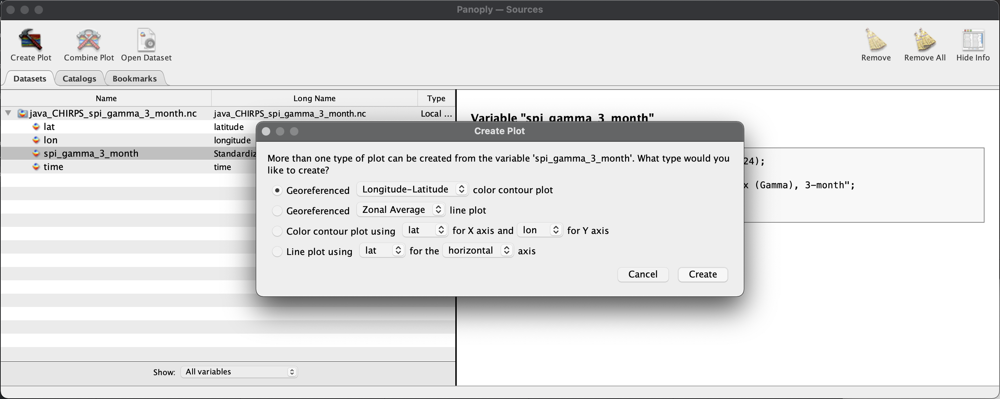

Visualize the result using Panoply
Visualize the result using Panoply#
Let see the result.
From the
output_ncdirectory, right-click filejava_CHIRPS_spi_gamma_3_month.ncand Open With Panoply.If you are not following the tutorial but interested to see the file, you can download this file from this link on Github.

From the Datasets tab select
spi_gamma_3_monthand click Create Plot.
In the Create Plot window select option Georeferenced Longitude-Latitude.
When the Plot window opens:
Arrays tab: Change the time into
469to view data onJan 2020.Scale tab: Change value on Min
-3, Max3, Major6, Color TableCB_RdBu_09.cpt.Map tab: Change value on Center on Lon
110.0Lat-7.5, then Zoom in the map through menu-editor Plot > Zoom - Plot In few times until Indonesia appear proportionally. Set grid spacing2.0and Labels on every grid lines.Overlays tab: Change
Overlay 1toMWDB_Coasts_Countries_1.cnob.

Notes
Above picture is an example from Panoply for macOS, and Panoply for Windows has slightly different user interface. The Arrays, Scale, Map, Overlays and other tab are accessible from menu-bar Windows.